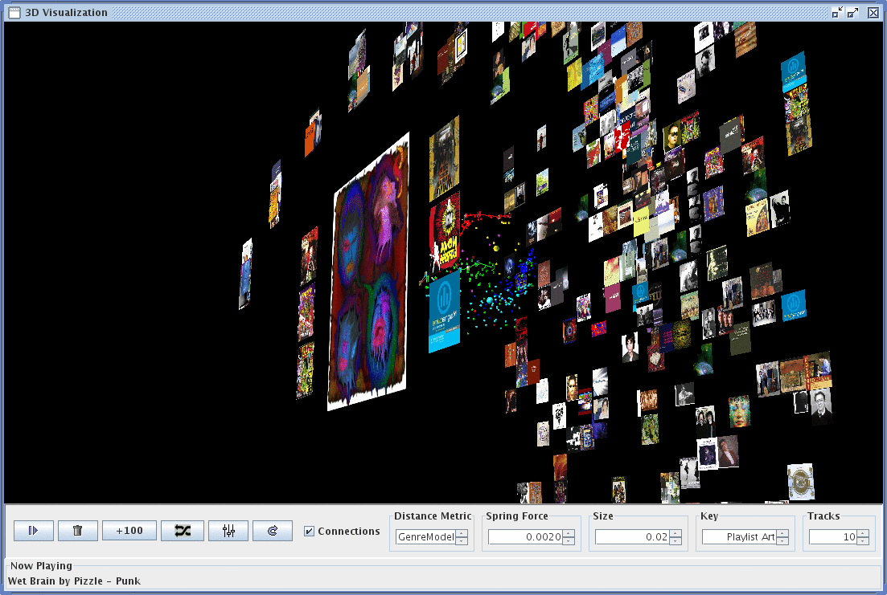
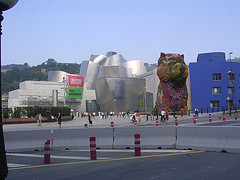
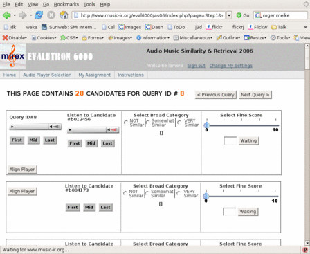
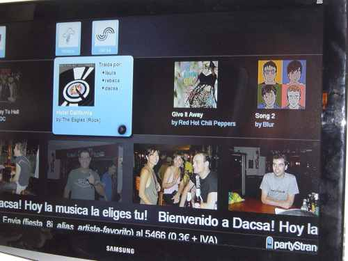
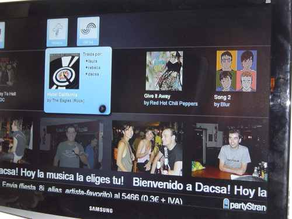

At the Recommenders Summer School
in Bilbao Spain last week, I had the opportunity to demonstrate the
Search Inside the Music project. Search Inside the Music is a
system that helps people find new music by finding music that 'sounds
similar' to music that they already like. I received quite a bit
of positive feedback from people at the conference. Many folks
wanted to learn more about how the system works. I have a
two-pager that gives a general overview of how the system works.
You can read about it here: Search Inside the Music - Two Pager.
Tuesday Sep 19, 2006
Monday Sep 18, 2006
Social recommender systems are currently the best way to get
recommendations. They give pretty good recommendations, and are
pretty easy to implement. However, they are not perfect. They can
be susceptible to popularity bias, shilling, strange feedback loops and
all sorts of issues that can affect the quality of the
recommendations.
One such issue is known as the Donaldson-Bidet Effect. The DBE is
often seen when a new recommender system is brought online. It is a
feedback loop that results in an item that is no better than any other
item becoming heavily favored.
Here's what happens: The recommender has a number of new items in the
inventory. Since the items are new they are of equal popularity. When
the system presents the items in order of their popularity, no one
item is consistently on the top (since they all have the same
priority).
Now, if one of the items happens to appeal to some of the first users of
the system, that item will become slightly more popular than the other
items (since all the items are new, it only takes a few users showing
interest in an item to make it become the most popular). This slightly
more interesting item now starts to appear at the top of the 'Most
Popular Items' list. New visitors that come to the recommender will
now consistently see the slightly-favored item at the top of the list.
It is natural for users to show interest (i.e. click) on the most popular
item. This preference for the most popular item becomes the feedback loop.
Users will click on the the most popular item, increasing its popularity,
until it is entrenched at the top spot.
With the Donaldson-Bidet effect, what we see is that the early
visitors to a recommender have a strong influence over what becomes
popular. This is evident in some of the current music recommenders.
Sites like Last.FM have a strong bias towards artists like 'The Postal
Service', reflecting their nerd/geek origins, whereas sites like
Rhapsody revolve around Jack Johnson, while MyStrands recommenders
tend to favor Coldplay and Green Day. These preferences are
continually reinforced by users of these recommenders.
So how did the Donaldson-Bidet effect get its name? Well, it all
started at Recommenders06, the Recommendation Summer School held in
Bilbao Spain during September of 2006. A number of attendees planned
on taking photos of the conference and posting them on Flickr. One
of the first to post images was a PhD student named Justin Donaldson.
Among the pictures that Justin posted was this picture:
along the caption 'Exciting new latrines in my hotel ... I'm kind of
frightened'. This photo caught the eye of other Recommender06
attendees since it was slightly unusual, and clicked on it to see why
Justin was posting photos of his toilet and bidet. Very quickly, this
photo rose to the top of the Flickr "Most Interesting" list for
Recommender06 photos. Anyone visiting Flickr would find this photo as
one of the most interesting photos from Bilbao Spain. Thus the
Donaldson-Bidet effect was born.
Update: To see the Donaldson-Bidet effect in action view the recommenders06 images sorted by 'interestingness'
There's a video on Sun's website that shows some highlights from the recent Sun Labs open house. Interesting clips from Sun Spots, the Connected Conference Room, and Search Inside the Music. Check out the video here: Sun Labs Open House Video Update #2: Thanks Chris Rijk for digging up the real link!
Saturday Sep 16, 2006
A very strange thing happened today. I was at the local library with the kids, when I noticed a couple of guys wearing yellow shirts blowing up balloons. One fellow looked like a grad student, the other - a bit like Santa Claus. Santa looked a bit familiar. Looking a little closer I realized this guy blowing up balloons was none other than Jon "maddog" Hall, executive director of Linux International and uber-linux-programmer. The other guy was Matt Oquist, one of the founders of 'Software Freedom Day'. Software Freedom Day is an effort to encourage the use of free and open source software. Jon and Matt were getting ready to pass out Ubuntu disks to any one who came by. I chatted with them for a bit. I was especially interested in hearing what Matt had to say about the use of open source in public schools. That's how he got started in the first place, trying to advocate for the use of free software in education. When I told them I worked for Sun, Maddog and Matt both wanted to know why Sun doesn't work harder at promoting Star Office / Open Office. I had no answer for them. Hey, I'm just a tech guy. But it did make me wonder why Sun is not working harder to get Open Office into schools. I cringe everytime I hear my kids talk about working on powerpoint presentations for homework.
I was really pleased to see what these guys were doing (and I was pleased that they gave me the latest Ubuntu CD as I need to upgrade my laptop).
I've been travelling all week so I haven't had a chance to look at the new iTunes 7.0 until just now. I've just installed it and now itunes 7.0 is happily going through my collection to 'determine gapless playback information'. I'm really excited about this. Until now, you would always hear 1 second or so gaps of silence between songs. This was fine for normal albums but if you listened to a concept album like Tommy, or Sgt. Pepper's or Dark Side of the Moon, the gap would just destroy the seemless transitions between songs. It looks like iTunes 7.0 will build a database of song transition timings so iTunes can put the proper amount of silence between songs. It looks like its going to take an hour or so to figure out the gaps for my 6,500 songs ... so I'll try it out soon. Can't wait! Update: Well, it looks like the gapless playback only works with the new 5th generation iPods ... bummer.
Wednesday Sep 13, 2006
A bunch of folks are blogging about Recommenders 06 over at blog.recommenders06.com/. There are descriptions about the talks and more photos. For instance, read about what Chris Anderson has to sayabout the "Jack Johnson" effect (which at last.fm is the "postal service" effect and at myStrands the 'Coldplay" effect).
Monday Sep 11, 2006
A few of the folks from Recommenders 06 went out to dinner tonight. We had this multi-course extravaganza which included this dish:
It's pepper stuffed with squid, covered by the squid ink. It's the ugliest dish I've every seen, but it tasted so good.
I've added a few more shots of the evening's activities on my flicker page. There are some others posting pictures too: all recommenders 06 pictures on flickr.
Sunday Sep 10, 2006

I arrived in Bilbao Spain this morning. I'm attending and speaking at the "Present and Future of Recommender Systems". I took a few photos and uploaded them to Flickr. Check them out at my Recommender 06 flickr page.
When I was preparing for this trip my two teenage daughters, Cari and Liz were helping me learn some Spanish phrases (I never took a Spanish course). When I got here I was rather surprised to see all of the signs were printed in a language that was definitely not Spanish:
Hmmm, I wonder if Cari and Liz know any Basque phrases?
I arrived in Bilbao Spain this morning. I'm attending and speaking at the "Present and Future of Recommender Systems". I took a few photos and uploaded them to Flickr. Check them out at my Recommender 06 flickr page.
When I was preparing for this trip my two teenage daughters, Cari and Liz were helping me learn some Spanish phrases (I never took a Spanish course). When I got here I was rather surprised to see all of the signs were printed in a language that was definitely not Spanish:
Hmmm, I wonder if Cari and Liz know any Basque phrases?
Friday Sep 08, 2006
One of the challenges of trying to build a music similarity model is figuring out how to evaluate the model. There's no absolute ground truth that you can rely on (something that you can do with other tasks such as artist identification). Some researchers have proposed some good ways of estimating similarity performance but when it gets right down to it there's no real substitute for human judgement - having people listen to two songs and decide whether or not they are similar.
This year as part of ISMIR 2006, MIREX (the Music Information Retrieval Evaluation eXchange) is organizing the first music similarity evaluation. The centerpiece of the evaluation is a human evaluation. Human judges listening to music to decide how similar songs are to a seed song.

The evaluation is coordinated by the Evalutron 6000 that is being created by Dr Stephen Downie and his IMIRSEL team. Stephen and his ace crew have done a great job figuring out how to put together a system to make the evaluations possible. Probably the hardest thing to do is to figure out how to setup an evaluation that will satisfy all of the researchers. Everyone has an opinion about how such an evaluation should be done and it is harder than herding cats getting everyone to agree.
There's a sandbox version of the Evalutron 6000 that you can try if you are curious to see how the evaluation works.
I
Monday Sep 04, 2006
The Google Image Labeler
is a game where you and a web partner try to agree on a label on an
image. The more images you and your partner identicaly label the
more points you get. Of course, at the same time, google is
collecting all sorts of human-applied labels that it can then use to
improve its image search function. It's a great way to get humans
to help classify images without having to pay them
It seems that a similar technique could be used to help apply labels to music. The labels could then be used to help cross the semantic gap, and allow people to search for music based upon content-based keywords. Teaching computers how to extract meaningful acoustic labels from audio is a hard job. Getting humans to provide the labels by getting them involved in an engaging game, where the labels are generated as a sideproduct would be a great way to collect this data. The resulting labels would be extremely useful for researchers and music search engine creators. Of course, audio and images are very different media. A game that works well with images won't work well with audio. So the trick is to figure out how capture the labelling process in an engaging activity. Sounds like a good masters thesis for some music technologist.
It seems that a similar technique could be used to help apply labels to music. The labels could then be used to help cross the semantic gap, and allow people to search for music based upon content-based keywords. Teaching computers how to extract meaningful acoustic labels from audio is a hard job. Getting humans to provide the labels by getting them involved in an engaging game, where the labels are generated as a sideproduct would be a great way to collect this data. The resulting labels would be extremely useful for researchers and music search engine creators. Of course, audio and images are very different media. A game that works well with images won't work well with audio. So the trick is to figure out how capture the labelling process in an engaging activity. Sounds like a good masters thesis for some music technologist.
Friday Sep 01, 2006
The other day I was speculating about PartyStrands. It looks like my wild guess was right .. here's a picture of PartyStrands in action:

There are quite a few more on the MyStrands site. Looks like a fun party too.

There are quite a few more on the MyStrands site. Looks like a fun party too.
NPR says that they will be creating a 'major digital music service'
with a scheduled roll out early next year. According to their
press release:
The centerpiece of the digital music service will be a supersite
pooling the public radio system’s collective resources, enabling users
to learn and explore, creating communities and offering exposure for
emerging and non-mainstream artists. It will encompass all music forms
- including classical, jazz, folk, opera, AAA, electronica and
alternative - reflecting the breadth of genres and tastes already
offered to users of the 815 public radio stations around the country
and their partner websites.
It is unclear whether this will be free content, paid content or a mixture of both. Thursday Aug 31, 2006
I was using a web service provided by one of the web 2.0 music
discovery companies. I was having a bit of trouble ... the API just
didn't let me do what I wanted to do. I explained my difficulty to one
of the startup developers. Five minutes later I got an email describing
a modified API that now did what I needed it to do ... and the change
was not only described, it had been implemented and deployed!
This kind of nimbleness is a hallmark of web 2.0. Development is
lightweight, changes are easy to make and deploy. It doesn't hurt when
the main developer pushing out a change is also one of the founders of
the company. When the developer is in charge, things can happen fast.
In larger companies though, like Sun, it is hard to be nimble. We have
lawyers, we have branding, we have trademark police. We have security
reviews, firewalls and proxies. We have lots of processes in
place to protect the interests of Sun. All of these processes take
the all the nimbleness (and the fun) out of the development process.
A month or so ago I decided to take a deep dive into web 2.0. I figured
the best way to learn this stuff was to actually do it. So I wrote a
web2.0 mashup. I think it is pretty cool and I think others will think
so too. Now, if I was working for myself, I'd just toss the app up on
one of those commercial web hosting services and I'd be done. My app
would be deployed, people would be using it, I'd be happy. However,
I'm working for Sun, so instead of deploying the app, I am trying to
figure out how to navigate through all of the proper procedures to get
it deployed. I suspect that by the time I get this mashup out there, I'll
have spent more time wending through the processes than I did actually
writing the software.
I know Sun can be nimble and flexible. The fact that I can write this
in my Sun blog is a testament to that fact. But if we are going to do
the web 2.0 thing, we have to be able to act more like a web 2.0 company.
Perhaps it is time for us to form the 'Nimbleness 2.0 exploratory
committee' that can (after a few months) make some recommendations
about how we can be more nimble.
Wednesday Aug 30, 2006
There's a nice teaser at partystrands.com-
where we learn that partyStrands is the "future of interactive music
and community". PartyStrands is part of the MyStrands music
recommendation empire. The PartyStrands site doesn't go 'live'
until September 14th, so we won't know for sure until then what
partyStrands is but let me take a guess anyway.
I'm guessing that if you go to a PartyStrands-enabled club or party you'll be able to add songs to the party playlist via a kiosk computer or even your mobile phone and PartyStrands will work out the playlist for the party based upon what people are requesting. PartyStrands will have to deal with intelligent song ordering, and of course playlist vandalism (there's always that guy who tries to add death metal to the Barry Manilow set). The MyStrands folk already know a whole bunch about playlists and social music, so I'm guessing they'll be able to do a pretty good job.
Now this is all just my speculation PartyStrands could be something completely different ... we'll just have to wait a couple of weeks ...
I'm guessing that if you go to a PartyStrands-enabled club or party you'll be able to add songs to the party playlist via a kiosk computer or even your mobile phone and PartyStrands will work out the playlist for the party based upon what people are requesting. PartyStrands will have to deal with intelligent song ordering, and of course playlist vandalism (there's always that guy who tries to add death metal to the Barry Manilow set). The MyStrands folk already know a whole bunch about playlists and social music, so I'm guessing they'll be able to do a pretty good job.
Now this is all just my speculation PartyStrands could be something completely different ... we'll just have to wait a couple of weeks ...
Saturday Aug 26, 2006
I was saddend to hear that big band jazz great Maynard Ferguson
has passed away. Maynard's "Live at Jimmy's" was a staple of my
formative highschool listening years. Maynard defined the
'trumpet-hero' genre with his incredible power and range.
Maynard's jazz/rock fusion style opened the door to jazz for many like
myself who grew up listening to rock. He will be missed.
This blog copyright 2010 by plamere